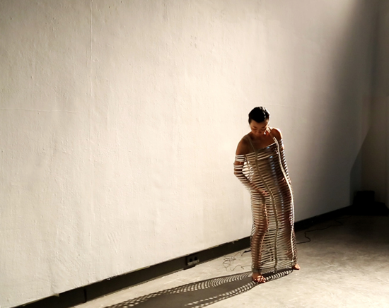
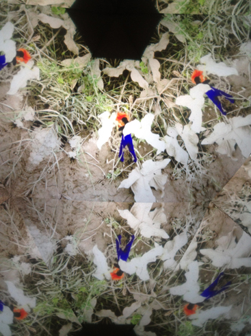
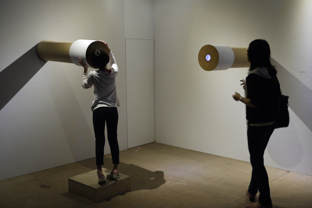
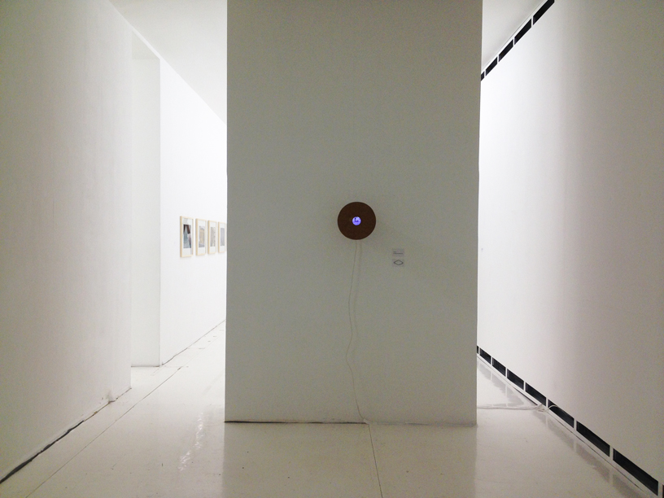
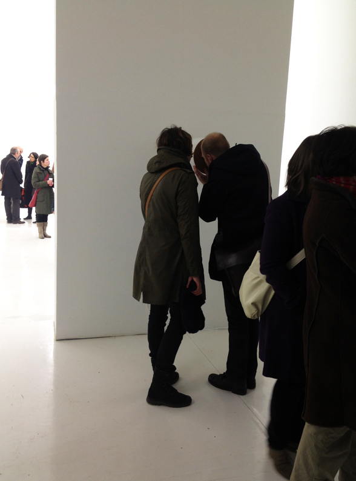
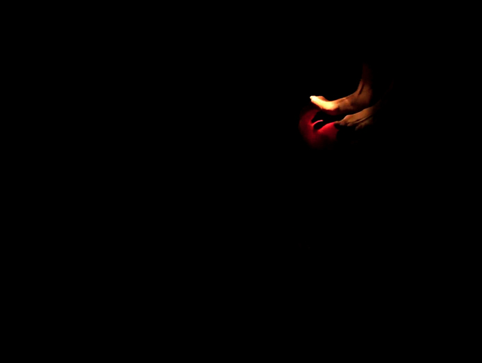
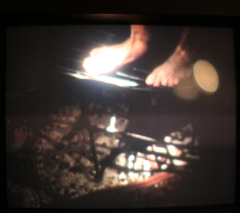
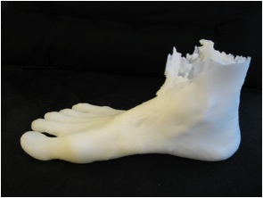
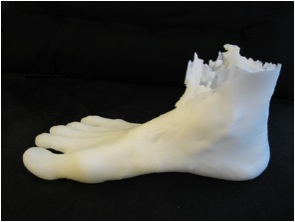

Ya Wen Fu 傅雅雯*1980 in Y
Ya-Wen Fu
| CV | Contact |
| 2013-2012 | 2012-2009 |
2013
Der Körper, in dem ich zu Hause bin Die hier gezeigte Arbeit besteht aus zwei, sich gegenüberliegend positionierten Aspekten. In der Videoarbeit improvisiere ich einen realen Zustand durch meinen körperlichen Ausdruck. Ich zeige einen Menschen in seiner Wahrnehmung, Bewegung und dem Erkennen seiner Grenzen. Um diesen realen Zustand zu verdeutlichen und somit sichtbar zu machen, verwende ich in meiner Performance eine Skulptur, die im übertragenen Sinne für ein Korsett steht. Die Skulptur besteht aus 80 Metallringen und ebenso vielen Spannfedern. Meine Körperbewegung wirkt Druck auf die jeweiligen Metallringe aus und die Spannung auf den Körper erhöht sich. Daraus entwickelt sich eine Kommunikation zwischen Körper und Skulptur und führt zu einer Wechselwirkung von Anspannung und Entspannung. Das Video und meine Performance stehen im unmittelbaren Zusammenhang. Durch die Gegenüberstellung wird der Prozess von Wahrnehmung, Bewegung und Begrenzung für den Zuschauer erfahrbar. Einerseits stellt die Performance die Realität dar. Jedoch weise ich mittels der Skulptur dieser Realität eine Grenze zu. Allerdings existiert solch eine substantielle Begrenzung im wahren Leben nicht. Auf der anderen Seite vermittelt das Video einen realistischen Zustand in dem sich der Körper scheinbar frei und ohne sichtbare Grenzen bewegt. Erst durch die Konfrontation mit der Performance wird auch hier eine bestimmte Begrenztheit deutlich. Ich glaube, wir alle leben mit unseren Grenzen, aber die wenigsten von uns nehmen diese wahr. Mein Anliegen mit dieser Arbeit ist es, durch die Veranschaulichung einen Erkenntnisprozess beziehungsweise -zustand hervorzurufen, in dem man sich seiner eigenen Grenzen bewusst wird. |
|
|  |  |
| “Der Körper, in dem ich zu Hause bin″ | HGB Gallery, 2013 |
2013
Ich habe die Wahl What is identity? Is identity a way for individuals, groups or groups of individuals to differentiate themselves from one another in their social relations? How the subject identifies with its own existence in space and time? This self-consciousness and self-assertion, the process, include not just one's own self-image, but also the inclusion of the others. Do they have the same or comparable awareness, the same understanding of my/one identity? Who am I? Such a simple yet complex question. Because we live between different systems, we live in prefabricated identities and those of others. So one would be born into a certain identity, characterized by race, gender and familial status. We also acquire certain identities during the course of our lives. Regardless whether we actively live through such identities or not, they're given to us. |
|
 |
 |
| “Ich habe die Wahl″ | aquabitArt Gallery, 2013 |
2012
Stadt Zeit Verschiebungen In diesem Projekt versuche ich die Einwohner Tivolis anhand ihrer Gesten und Bewegungen näher zu betrachten und wie sich die unterschiedlichen Kommunikationsformen gegenseitig beeinflussen. Dabei interessiert mich nicht nur deren geschlechterspezifisches Verhalten, sondern auch die Einzelpersonen in einem sozialen Gefüge. Ebenfalls wird die Vorstellung, dass eine Frau die Rolle einer typisch männlichen Tätigkeit übernimmt, beispielsweise die eines Handwerkers, und sie so die Erneuerung der Stadt vorantreibt, dargestellt. Als Ausgangsmaterial für mein Video dienen mir die vor Ort entstanden Fotos. Für das Video werde ich mich selbst in diese Rolle hineinversetzen, wobei mein Geschlecht undefiniert bleibt und mit Hilfe von Animation werde ich dann charakteristische männliche Gesten darstellen.
|
 |
 |
 |
 |
 |
| “Viaggio in Italia /Italienische Reise 2010-2012″ | Leipzig, 2012 |
 |
 |
| “Artificial Nature“ | Taipei (Taiwan), 2012 |
 |
 |
| “Viaggio in Italia / Italienische Reise 2010-2012″ | Frankfurt, 2013 |
2012
Abendteuer
|
 |
 |
 |
| “Abendteuer“, Videoinstallation | Leipzig, 2012 |
2011
Walkthrough
|
|
2011
Gott und die Welt * (“God and the World”) During the Rundgang (open day tour) 2011 the culinary experience outside developed harmoniously with the installation in the class room. The focus was not on the exotic or foreign dishes, rather on all that was local. The natural elements, the ingredients of the dishes were not only explored in their culinary character but also in their creative attributes. Nourishment here is seen as transformation of matter, as a conversion process within which man is only a part of a life chain, that links various beings together: between plants and animals, between sky and earth, with natural elements, simply with “Gott und die Welt”.
|
   |
2010
Ohne Ende "Menschen wollen Menschen wie Marionetten kontrollieren. Sie imitieren die Natur bis sie diese in Kultur auflösen." "People want to control other people like puppets. They imitate nature until they dissolve it in culture."
|
 |
2009
Exixtieren ohne Grenzen Ich möchte gerne versuchen an unterschiedlichen Ort aufzunehmen. Eine weitere Tänzerin und ich bewegen uns improvisiert an diesen Orten. Wir machen eine Reihe körperlicher Aktionen, die die Beziehung und Emotionen zwischen diesen zwei Personen ausdrücken. Aber es gibt nicht nur unsere persönliche Körpersprache, sondern auch die körperliche Bewegung, die wir von unserer Gesellschaft erfahren, erlernt oder gesehen haben. Inhaltlich geht es mir um den Körper und seine Beziehung zum Raum. Meine Vorstellung ist, dass eine Tänzerin und ich in einer Kirche, im Museum und im Park improvisierte Tanzbewegungen machen. Dabei ist mir die Umgebung sehr wichtig, da alle 3 Orte keine private, sondern öffentliche Räume sind. Diese Orte spielen eine wichtige Rolle in unserer kulturellen Gesellschaft. Es gibt Zusammenhänge zwischen dem Körper und den Räumen unserer Gesellschaft. Die aufgenommenen Räumlichkeiten der Orte und die darin stattfindenden Körperbewegungen werden ein wesentliches und wichtiges Element innerhalb des Werkes einnehmen. Museum, Park und Kirche sind keine privaten, sondern öffentliche Orte. Es gibt eine klare und deutliche Begrenzung oder Regelung der Körperhaltung und Bewegungsfreiheit in der Kirche und im Museum. Man muss sehr ruhig und leise sein und darf nicht zu viel Körperbewegungen machen. Im Park ist es ein bisschen anderes. Der Park ist ein zwar auch ein öffentlicher Ort. Es gibt zwar mehr Freiheit des Körpers, aber man achtet trotzdem auf die Wahnehmung anderer. |
  |
2008
Kampf In meiner Videoinstallation werden zwei Videos auf gegenüberliegenden Wänden projiziert. In beiden Videos bin ich zu sehen. Man sieht wie das eine Ich das andere, sich auf der Wand gegenüber befindliche Ich stößt, schlägt und schubst. Dieses gestoßen, geschlagenen und geschubste Ich wird immer versuchen eine Lösung zu finden wie es stehen bleiben kann und seinen Schwerpunkt behält, um dann wieder mit der gleichen Ausgangsposition erneut anzufangen. Niemand kann genau sagen, wo die Kraft und die möglichen Bewegungen unseres Körpers seine Grenze findet. Die Gesellschaft und der Kulturkreis, in dem wir aufwachsen, wirkt auf unsere Körpersprache ein und setzt Regeln, wie wir uns bewegen sollen und können. Aber was passiert, wenn wir ohne feste und bestimmte Bewegungsstrukturen wären? Wie würde sich unser Körper, der durch Gesellschaft und Kultur geprägt ist, entfalten? Wie unterscheiden sich die gewohnten Bewegungen unseres Körpers mit denen einer formfreien Körperbewegung? |
|
 |
|
| “Kampf“, Videoinstallation | Leipzig,2008 |
20
t Berlin
Since 2007 Studies in Media Arts, HGB Academy of Visual Arts Leipzig, Intermedia Class of Prof. Alba D`Urbano
Exhibitions
2010 “Touch me!” Galerie Sylvia Bernhardt, Wiesbaden
2010 “Chain of Fools” HGB Academy of Visual Arts Leipzig
2009 “Untitled” Leipzig
2009 “Kampf” Berlin
2004 Installation “Through” Taipei, Taiwan
2002 “Motions and Images” Taipei, Taiwan
2002 “Spiel” Taipei, Taiwan 2001 “Mandarins” Taipei, Taiwan
2000 Exhibition of Graphic Design, Taipei, Taiwanm